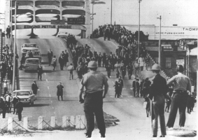
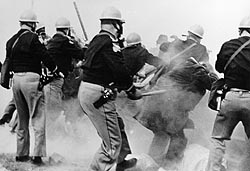
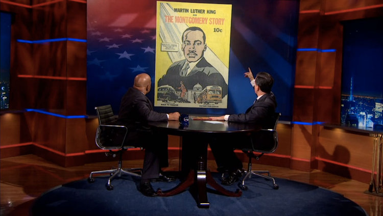

Dear Friends,
Last October, I had to pinch myself as I sat next to one of my heroes, Congressman John Lewis, in a small soul food restaurant in Durham, North Carolina.
Just an hour earlier, I had been blessed to meet Rep. Lewis at a speaking event. As we left, his publisher spontaneously invited me to join them for an intimate dinner. I was head over heels.
As we hunched over our delicious meal of fried chicken, waffles, and shrimp gumbo, the civil rights legend looked me in the eyes and told me how excited he was to return to Selma, Alabama in the spring of 2015. He asked me, would I come too?
Would I? Without a doubt!
Today I will drive 500 miles from my Asheville, North Carolina home to Selma -- making stops at airports in Atlanta and Birmingham to pick up friends -- to join the congressman and thousands of others. We will attend the "Bridge Crossing Jubilee" to commemorate the 50th anniversary of the Bloody Sunday march across the Edmund Pettus Bridge.
And as I think about crossing that famous bridge, I realize that this is my opportunity to help build a new bridge.
That October evening, Congressman Lewis told me how influential the Fellowship of Reconciliation has been in his life.
As he stood on the Edmund Pettus Bridge, staring at a mob of state troopers and white vigilantes, he couldn't have predicted the vicious state of violence that would be unleashed on his fellow marchers.
But he had been extensively trained in nonviolence by Rev. James Lawson, the Fellowship of Reconciliation's Southern Secretary. Starting at age 18 in 1958, while a student at American Baptist Theological Seminary, Lewis attended Rev. Lawson's weekly workshops in downtown Nashville, TN.
FOR's vision for nonviolent social change captivated Lewis.
He along with other emboldened young activists would go on to help transform our nation, as his peers embarked on Freedom Rides, Freedom Summer, and other landmark campaigns.
Donate to FOR so we can continue to push forward on civil rights in the twenty-first century.
A Force More Powerful
In Selma, John Lewis and his fellow Student Nonviolent Coordinating Committee activists partnered their grassroots organizing strategy with local leaders, and then with the prophetic leadership of Dr. King and the Southern Christian Leadership Conference. Together they embodied a Beloved Community.
Within less than a month, a mobilization of thousands of people of good will -- Protestant, Catholic, Orthodox, Jewish; black, white, Asian, Latino -- crossed that bridge, defying the white supremacist power structure and completed a four-day march to Montgomery. There they heard Martin Luther King, Jr. call out "How long?" "Not long!" our Beloved Community proclaimed!
Five months later, President Lyndon Johnson signed the Voting Rights Act into law. It was a testimony to courage, persistence, and steadfastness.
Be the Bridge
This week I will walk among thousands who join Congressman Lewis, President Obama, numerous members of Congress, SNCC, SCLC, and FOR leaders. There will be "movement veterans, countless young activists, and students coming together to commemorate how our "Dream Marches On."
Indeed, there is a remarkable new generation who are giving voice and body to this generation's freedom struggles. And there are times when these struggles feel the same as the ones from decades ago: racial and economic divisions we see reflected in schools, housing, policing, and yet again, voting rights.
Working together, with discipline and a commitment to nonviolence, all things are possible.
Rep. Lewis told me that almost 60 years ago, he was introduced to FOR through a comic book, Martin Luther King and the Montgomery Story (which you can order from FOR online). He then met Dr. King in person and was trained by Jim Lawson, both of whom served as a bridge to Gandhi's nonviolent philosophy of social change.
Now, Congressman Lewis is a bridge to my generation and the one behind me.
Together, we share the commitment to engage with and support young people in their quest for knowledge and empowerment. Inspired by FOR's 1958 comic book, Rep. Lewis has written his memoirs -- March, Books One and Two -- in an accessible, graphic book format so that youth will draw on lessons from the civil rights era and apply them to today's justice movements.
As he told me, FOR's dedication to teaching nonviolence and to being a bridge between generations of changemakers reflects his own vision of the challenge before us all.
Please join me by committing to be a bridge in your community. You may not be able to come to Selma next month, where FOR staff and members will join me for this Jubilee commemoration, but wherever we live, we each can be a bridge!
And if you are interested in supporting FOR's continuing civil rights work across the country, consider making a tax-deductible donation to FOR.
Let us walk together, spanning our ages and identities, to share with one another the inspirational message of nonviolence.
Together, We Shall Overcome.
In Peace and Steadfast Courage,
 Ethan Vesely-Flad Ethan Vesely-Flad
Director of National Organizing
Fellowship of Reconciliation
Photos: Rep. John Lewis (public domain, U.S. Congress); March 7, 1965 Selma march on Edmund Pettus Bridge (U.S. Department of Justice), Creative Commons; Police beat Selma protesters on Bloody Sunday (F.B.I.), CC; Selma-to-Montgomery march (Peter Pettus/Library of Congress), CC; Rep. John Lewis on Stephen Colbert Show (FOR screen capture). |